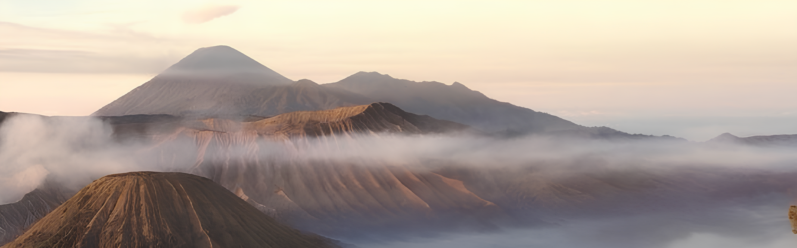

Away from the noise and density of the urban atmosphere,
let's refresh your body and mind by exploring nature
amazing indonesia
Indonesia has abundant natural resources. The country has vast tropical rainforests, towering mountains, and beautiful beaches. Indonesia also has a variety of unique and rare flora and fauna. In addition to natural wealth, Indonesia also has diverse cultural wealth. The country consists of various ethnic groups, each of which has its own culture. These cultures are reflected in various aspects of Indonesian life, ranging from language, clothing, food, to art.
Pulau Sumatera adalah sebuah permata yang tersembunyi di antara samudra Hindia dan Selat Malaka, menawarkan pesona alam yang memukau, keanekaragaman budaya yang kaya, serta petualangan tak terlupakan bagi para pengunjungnya.
Dengan lanskap yang mengagumkan, pulau ini menampilkan gunung-ganung megah yang menjulang tinggi, hutan-hutan hujan yang lebat, dan danau-danau yang mempesona. Salah satu daya tarik utamanya adalah Danau Toba, danau kawah raksasa yang terbentuk dari letusan gunung berapi purba, menyuguhkan pemandangan yang menakjubkan dan keindahan alam yang menenangkan.
Selain itu, Pulau Sumatera juga menawarkan pengalaman petualangan yang tak terlupakan bagi para pencari sensasi. Dari mendaki gunung berapi yang menantang hingga menjelajahi hutan-hutan yang belum tersentuh, pulau ini mempersembahkan beragam aktivitas ekstrem yang akan memacu adrenalin Anda.
Pulau Jawa, dikenal sebagai "Jantungnya Indonesia", merupakan pusat kehidupan, kebudayaan, dan sejarah negara ini. Dengan keindahan alam yang menakjubkan, warisan budaya yang kaya, serta kehidupan perkotaan yang berdenyut, Pulau Jawa menawarkan pengalaman yang tak terlupakan bagi setiap pengunjungnya.
Pulau ini dihiasi oleh gunung-gunung megah seperti Gunung Bromo, Gunung Semeru, dan Gunung Merapi yang menjulang gagah di cakrawala, menambahkan keanggunan alamiah yang luar biasa. Dari pantai-pantai berpasir putih di sepanjang pantai utara hingga sawah-sawah hijau yang terhampar luas di dataran rendah, keindahan alam Pulau Jawa tak tertandingi.
Dengan segala keindahan alamnya, kekayaan budayanya, serta kehidupan perkotaan yang berdenyut, Pulau Jawa adalah destinasi yang tak boleh dilewatkan bagi siapa pun yang ingin merasakan pesona Indonesia yang sesungguhnya.
Kepulauan Nusa Tenggara, terdiri dari provinsi-provinsi seperti Nusa Tenggara Barat dan Nusa Tenggara Timur, adalah gugusan pulau-pulau yang menakjubkan di antara Laut Flores dan Laut Sawu. Daerah ini menawarkan keindahan alam yang luar biasa, kekayaan budaya yang unik, serta pengalaman petualangan yang tak terlupakan bagi para pengunjungnya.
Dengan pantai-pantai yang menakjubkan, air laut yang jernih, dan terumbu karang yang indah, Kepulauan Nusa Tenggara adalah surga bagi para pecinta laut dan penyelam. Pulau seperti Pulau Komodo, Pulau Rinca, dan Pulau Kanawa menawarkan kesempatan untuk menyelami kehidupan bawah laut yang kaya akan keanekaragaman hayati, termasuk bertemu dengan komodo, hewan purba yang menjadi ikon Indonesia.
Petualangan juga menanti para pengunjung di Kepulauan Nusa Tenggara. Dari mendaki gunung-ganung berapi aktif seperti Gunung Rinjani di Lombok hingga menjelajahi hutan-hutan savana yang luas di Pulau Sumba, setiap sudut daerah ini menawarkan pengalaman petualangan yang tak terlupakan.
Pulau Kalimantan, yang merupakan pulau terbesar ketiga di dunia, adalah tempat di mana keindahan alam liar bertemu dengan kekayaan budaya yang mendalam. Dengan hutan hujan tropis yang luas, sungai-sungai yang megah, serta kehidupan liar yang melimpah, Kalimantan menawarkan pengalaman yang tak terlupakan bagi setiap pengunjungnya.
Hutan-hutan Kalimantan adalah rumah bagi keanekaragaman hayati yang luar biasa, termasuk spesies langka seperti orangutan, gajah, dan badak. Taman Nasional Tanjung Puting, salah satu tujuan wisata alam terkenal di pulau ini, memungkinkan pengunjung untuk melihat secara langsung kehidupan liar yang kaya dan beragam.
Selain keindahan alamnya yang menakjubkan, Pulau Kalimantan juga kaya akan warisan budaya yang beragam. Budaya Dayak, yang memiliki tradisi adat yang kuat dan seni ukir yang indah, memberikan pandangan yang mendalam tentang kehidupan masyarakat pedalaman. Begitu juga dengan kekayaan seni dan kerajinan seperti tenun ikat dan ukiran kayu, yang merupakan bagian integral dari identitas budaya Kalimantan.
Pulau Sulawesi, dengan keunikan geografisnya yang menyerupai huruf "K", adalah tempat di mana keindahan alam yang menakjubkan bertemu dengan keanekaragaman budaya yang memukau. Dikenal sebagai "Benua Indonesia Mini", pulau ini menawarkan pengalaman wisata yang berbeda dan tak terlupakan bagi para pengunjungnya.
Salah satu daya tarik utama Pulau Sulawesi adalah keindahan alamnya yang mempesona. Dari puncak-puncak gunung yang menjulang tinggi hingga terumbu karang yang spektakuler, Sulawesi memiliki banyak tempat yang memukau seperti Taman Nasional Bunaken di Manado, Taman Nasional Lore Lindu di Sulawesi Tengah, dan Danau Tondano di Sulawesi Utara.
Petualangan juga menunggu para pengunjung di Pulau Sulawesi. Dari menyelam di perairan yang kaya akan kehidupan laut yang berwarna-warni hingga menjelajahi gua-gua indah yang tersebar di seluruh pulau, setiap langkah akan membawa Anda lebih dekat dengan keajaiban alam dan budaya Sulawesi.
Kepulauan Maluku, juga dikenal sebagai "The Spice Islands", adalah surga tropis yang terpencil di tengah-tengah Samudra Pasifik. Terdiri dari sekitar seribu pulau, kepulauan ini menawarkan keindahan alam yang luar biasa, sejarah yang kaya, serta kekayaan budaya yang memikat.
Daya tarik utama Kepulauan Maluku adalah keindahan alamnya yang mempesona. Dari pantai-pantai berpasir putih yang terjaga keasriannya hingga terumbu karang yang spektakuler di bawah air laut yang jernih, Maluku adalah surga bagi pecinta laut dan penyelam. Taman Nasional Manusela di Pulau Seram dan Taman Nasional Aketajawe-Lolobata di Pulau Halmahera menawarkan pengalaman mendaki yang luar biasa dengan pemandangan alam yang menakjubkan.
Kepulauan Maluku juga dikenal dengan kekayaan budayanya yang unik. Suku-suku seperti suku Ambon, suku Ternate, dan suku Tidore memiliki tradisi, tarian, dan upacara adat yang kaya dan menarik untuk dijelajahi. Festival-festival budaya seperti Festival Teluk Jailolo di Halmahera dan Festival Pesona Laut Ternate menampilkan kekayaan budaya dan seni yang memikat dari pulau-pulau ini.
Pulau Papua, dengan keindahan alamnya yang masih alami dan kekayaan budayanya yang melimpah, adalah sebuah tempat di mana petualangan dan keajaiban alam menyatu dalam harmoni yang indah. Terletak di ujung timur Indonesia, pulau ini menawarkan pengalaman wisata yang tak terlupakan bagi para pengunjungnya.
Salah satu daya tarik utama Pulau Papua adalah keindahan alamnya yang menakjubkan. Dari hutan hujan tropis yang lebat hingga pegunungan yang megah, Papua adalah rumah bagi berbagai ekosistem yang unik dan beragam. Taman Nasional Lorentz, yang merupakan Situs Warisan Dunia UNESCO, menawarkan pemandangan alam yang menakjubkan, termasuk gunung-gunung tertinggi di Indonesia, danau-danau biru yang tenang, serta gletser abadi yang langka.
Petualangan juga menunggu para pengunjung di Pulau Papua. Dari menjelajahi hutan belantara yang belum tersentuh hingga menyelam di perairan yang kaya akan kehidupan laut yang berwarna-warni, setiap sudut pulau ini menawarkan pengalaman petualangan yang luar biasa dan memuaskan hasrat akan petualangan alam.
Must try to visit!
Nusa Penida
Bali
Danau Toba
Suamtera Utara
Raja Ampat
Papua
Labuan Bajo
Nusa Tenggara Timur
Banda Neira
Maluku
Gunung Bromo
Jawa Timur
38 Daerah di Indonesia!


The island offers a range of activities, including snorkeling, diving, hiking, and beach hopping. One of the most famous attractions on Nusa Penida is Kelingking Beach, with its iconic T-Rex shaped cliff and stunning views. Other notable spots include Broken Beach, Angel's Billabong, and Crystal Bay, which are all known for their unique geological formations and vibrant marine life.
Kelingking Beach is one of the most famous attractions on Nusa Penida Island, Indonesia. The beach is renowned for its towering cliffs that resemble the head of a T-Rex, providing a spectacular view. Some consider it to be one of the most beautiful beaches in Indonesia. While access to the beach can be challenging due to steep and rocky paths, the breathtaking scenery along the way makes the journey worthwhile.
Located on the eastern coast of Nusa Penida, Diamond Beach offers breathtaking views of the Indian Ocean and is renowned for its photogenic appeal. The beach derives its name from the diamond-like sparkle of the sun reflecting off its crystal-clear waters and the glistening white sand.
This stunning rock formation creates a natural pool where visitors can swim and relax while enjoying the breathtaking views of the crystal-clear water and the surrounding coastal landscape. During low tide, the water in Angel's Billabong appears calm and inviting, making it an ideal spot for swimming and soaking in the natural beauty of Nusa Penida.
The name "Broken Beach" is derived from the arch's broken appearance, which resulted from the collapse of the cliff wall many years ago. This collapse created a natural bridge that now forms the iconic archway, allowing seawater to flow into the lagoon. Visitors to Broken Beach are treated to panoramic views of the turquoise waters of the lagoon contrasted against the rugged coastline and towering cliffs. The area surrounding the lagoon is rich in marine life, and it's not uncommon to spot schools of fish swimming in the clear waters.
Despite its growing popularity, Nusa Penida still maintains a relatively untouched charm compared to its more developed neighbor, Bali. However, tourism infrastructure is improving, with accommodations ranging from budget homestays to luxury resorts. Visitors usually reach Nusa Penida by taking a boat from Sanur or Padang Bai in Bali, with the journey taking around 30-45 minutes depending on the departure point.
Lake Toba is a volcanic lake located in the North Sumatra Province of Indonesia. It is the largest volcanic lake in the world and one of Indonesia's major tourist attractions. Formed by a cataclysmic supervolcanic eruption approximately 75,000 years ago, Lake Toba is renowned for its stunning natural beauty, blue waters, and the unique sight of Samosir Island, a large island situated in the middle of the lake, which was formed by subsequent volcanic activity.
Raja Ampat is an archipelago located in the province of West Papua, Indonesia. It is renowned for its stunning natural beauty, vibrant coral reefs, and diverse marine life, making it one of the top diving destinations in the world. Comprising over 1,500 small islands, Raja Ampat is part of the Coral Triangle, which is recognized as the epicenter of marine biodiversity. Its crystal-clear waters are home to a vast array of marine species, including colorful coral reefs, tropical fish, sharks, manta rays, and even rare species like the pygmy seahorse.
Labuan Bajo is a town located on the western tip of Flores Island in the East Nusa Tenggara province of Indonesia. It serves as the gateway to the Komodo National Park, home to the famous Komodo dragons, as well as stunning marine biodiversity. Labuan Bajo has become a popular tourist destination in recent years, attracting visitors from around the world who come to explore the natural wonders of the Komodo National Park and its surrounding islands. The town itself offers a range of amenities for travelers, including accommodations, restaurants, and tour operators offering various activities.
Banda Neira is a small island located in the Banda Islands, which are part of the Maluku Islands in Indonesia. It holds significant historical and cultural importance due to its role in the spice trade during the colonial era, particularly in the 16th and 17th centuries. During this time, the Banda Islands, and specifically Banda Neira, were the world's only source of nutmeg and mace, highly valued spices that attracted traders from Europe and Asia. The Dutch East India Company (VOC) established control over the islands, leading to a turbulent history of colonial rule and conflicts with indigenous populations
Bromo, or more commonly known as Mount Bromo, is an active volcano located in East Java, Indonesia. It is part of the Bromo Tengger Semeru National Park, which is a popular destination for both domestic and international tourists due to its breathtaking landscapes and cultural significance. Mount Bromo stands at an elevation of approximately 2,329 meters (7,641 feet) above sea level and is one of the most iconic volcanoes in Indonesia. Its dramatic beauty is accentuated by the surrounding Tengger Caldera, which is filled with a vast expanse of volcanic sand known as the "Sea of Sand" or "Lautan Pasir.